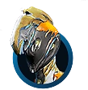
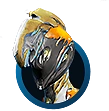

Chroma
The ideal character for stealthy, meticulous and calculating players. His lethal abilities are complemented by powers of distraction.
This is Ash, lethal and elusive.
Ash can remain unseen, but his effects on the battlefield can be felt by all. Keep an eye out, Tenno.
-Lotus
Release date: October 25th, 2012
Ash is a fast, maneuverable Warframe that possesses a high degree of survivability in the field. Fleet movement complements deadly tools of assassination, making Ash a perfect balance between killing potency and stealth.
Lore
During the Orokin Era, there was a school of assassination called The Scoria. Each of its members bore a black jewel imprinted between their eyes and treated Ash as their patron saint.
At one point during the Era, the school had two noteworthy students: brothers Dom and Pilio. Dom possessed great skill while Pilio was not as gifted, lacking his brother's grace and clarity, but one day Dom was captured by his target. As capture by the enemy was considered an unforgivable sin to the Scoria, Pilio was given the task to assassinate his brother, a mission that would be overseen by Ash himself. However, Pilio would be torn from killing his brother, were he to succeed, or being killed by his idol, were he to fail.
The pair was dispatched on a tower on Mars, but Pilio failed to overcome the fear that his task wrought, leaving Ash to slay the fifty guardsmen with his Causta Bow and DualKamas Dual Kamas. Ash led Pilio to their target's chambers, discovering Dom in civilian clothes, casually sharing a glass with a middle-aged mustachioed man whose eyes were sad and kind, and the gem between his eyes removed, signifying that he had betrayed the Scoria. The man gladly called Dom and Pilio his sons before coming to Dom's defense and brandishing a sidearm, which was quickly disarmed by Ash's BladeStorm Blade Storm.
Urged by Dom, a confused Pilio questioned Ash, who responded by sinking his blade into Pilio's gem. The gem was suppressing the memories of Dom and Pilio DeNas, who were stolen by the Scoria. The mustachioed man, Lio DeNas, was stealing back his sons. Ash had saved the boy from his turmoil and allowed the DeNas family to escape from Mars forever.
It is unknown why Ash went against the school's doctrine. However, it is known that not even the Scoria were spared from their idol during the fall of the Orokin.
 Caliban

Ember
Caliban

Ember